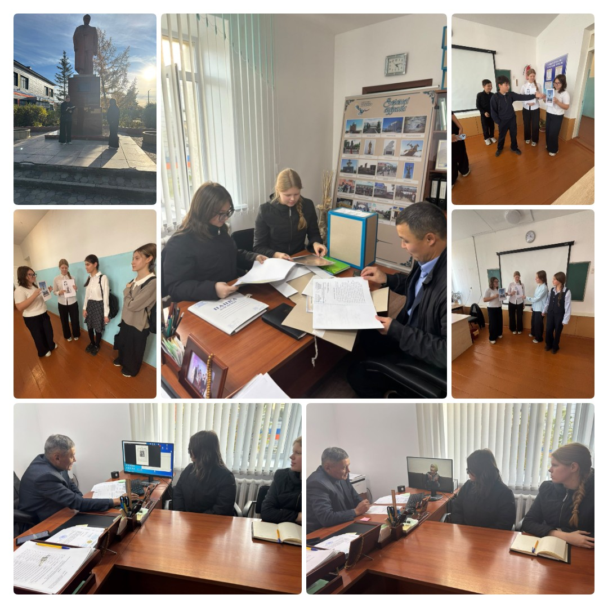
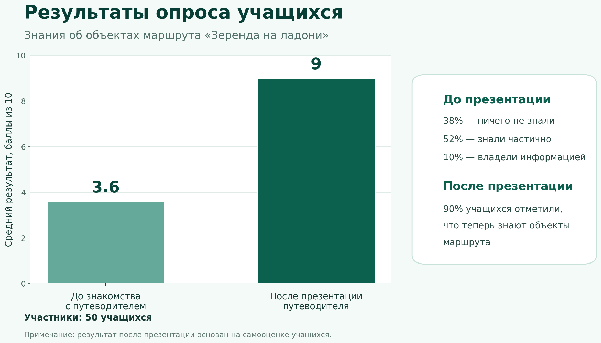

Актуальность
В Зеренде есть много интересных мест, но не все школьники знают их историю. Мы хотим помочь детям и гостям лучше узнать наше село.
В Зеренде есть много интересных мест, но не все школьники знают их историю. Мы хотим помочь детям и гостям лучше узнать наше село.
Создать интерактивный путеводитель по достопримечательностям Зеренды.
Мы использовали анализ и сопоставление архивных и краеведческих материалов, интервью, анкетирование, картографирование и обследование памятников. Посетили отдел архивов и объекты маршрута, провели фотофиксацию и опрос до и после презентации.
Интерактивный путеводитель по родному селу
Поможет ли интерактивный путеводитель школьникам и гостям лучше узнать достопримечательности Зеренды?
По результатам исследования в единый маршрут были объединены пять значимых объектов Зеренды: памятник Балкадише, историко-краеведческий музей, улица имени Аубакира Ильясова, памятник Малику Габдуллину и озеро Зерендинское. Каждый объект отражает историю, культуру или природное наследие родного края.

Фотографии объектов маршрута
Сопоставив архивные материалы, интервью и результаты посещения объектов, я увидела, что эти места рассказывают об истории, культуре, людях и природе Зеренды. Информация о них находилась в разных источниках, поэтому я постаралась объединили её в одном путеводителе.
Я разработала HTML-маршрут с пятью остановками, мультимедиа, виртуальными навигаторами, десятью вопросами по объектам и итоговым вопросом «Адал азамат».

Участников: 50 До: 3,6 из 10 После: 9 из 10
Исследование показало, что историю родного села интереснее изучать через интерактивный маршрут. Объединение памятных мест, фотографий, рассказов и вопросов сделало информацию о Зеренде более понятной и доступной. Путеводитель можно дополнять новыми объектами и использовать для школьных экскурсий.
Путеводитель можно использовать на уроках, в музее и для знакомства гостей с Зерендой. Локальная версия работает без интернета.
Наведите камеру телефона, чтобы открыть интерактивный маршрут.
Открыть интерактивный маршрут